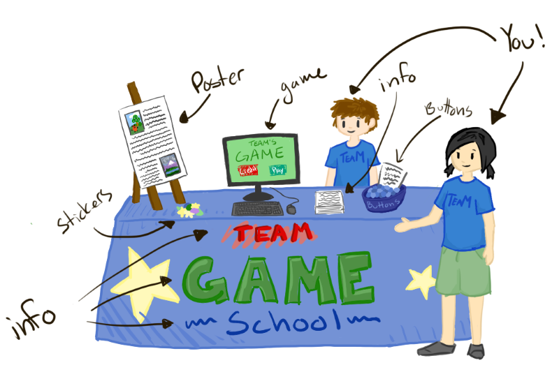

Compete in OGPC
OGPC has one competition per school year. In the fall, OGPC announces a new theme. (Check out past themes on the pages for previous seasons.)
Teams then build a video game that explores this theme to bring to the Main Event in spring to show off to judges and other students. For an example of what OGPC projects look like, check out our Team Management System where you can view entries from previous seasons.

At the Main Event, the day starts with check-in and getting your table assignment and schedule. Judging happens throughout the day with each team assigned a time block where they will present to judges. During the rest of the day, students will show their projects to other students, check out the games made by others, and attend breakout sessions with industry speakers. After judging is complete, we wrap up with the awards ceremony.
SCHEDULE (APPROXIMATE)
8:30 – Doors open for setup
9:45 – Opening ceremony
10:00 – Judging begins!
Noon to 1:00 – Lunch
3:30 – Begin packing up
4:00 – Awards ceremony in Warner Center
4:30 – Time to head out!
Jump to more information about how to get started as either a Student or a Coach:
COACH A TEAM
Ready to make a difference to a group of talented students? Volunteer as a coach to help guide them to the competition. Coaches don’t need to be programmers or artists themselves - the main job of a coach is to help the team get organized, make sure that they have a place to work on their project, and to chaperone them at the Main Event (including registration).
This video explains your role as a coach:
To get started, make sure you sign up on our mailing list as a coach:
The OGPC season kicks off in the fall, when we announce the theme and open registration. At that point, you can create your teams in our Team Management System (TMS) and register for the Main Event. Registration stays open until we run out of space, or a month out from the main event, whichever comes first.
For ideas on how to help your team(s) get the season started, checkout our Kickoff Guide
Compete As A Student
Each season of OGPC brings a new theme – your mission is to develop a game that incorporates and explores that theme. Then, bring your project to the Main Event to get feedback on your project and play the games made by dozens of other teams.
BEGINNERS WELCOME!
Our challenge is flexible enough so that even first-time teams can compete without being overwhelmed. With so many free, open source game creation engines and tutorials available online, there’s never been an easier (or more exciting!) time to try out game development.
We have a Resources page with a list of recommended tools and tutorials.
GET STARTED
Sound like fun? Join a local team (most teams come from schools or clubs like 4H) and get started. Don’t know of any local teams? Start a new one!
Every team needs:
- 2-7 team members.
- An adult (teacher/parent) to serve as the coach. The coach does not need to be an expert in game development – just someone who can help the team organize logistics like meetings and transportation to the main event.
Teams will need to build an original story and characters, create art, write code, manage their time, and present their project. So as you recruit others to join your team, look for a variety of skills.
Once you have a coach and a team, you can sign up to participate. Signups begin each fall when the current season’s theme is announced. To hear about when the new season starts, you can sign up for our mailing list as a student: